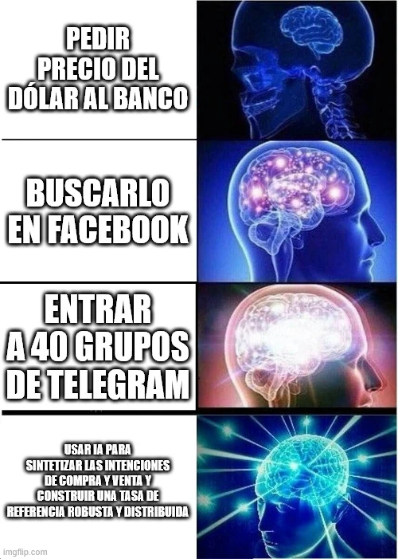

estrategIA #92 ·
Buscar el dólar, peldaño a peldaño
El contexto
El artículo describía cómo el medio cubano elTOQUE usa IA para analizar ofertas del mercado informal de divisas. La escala de cerebros pasa de consultas aisladas a reunir información dispersa; el último peldaño representa esa elaboración de una tasa de referencia.
Publicado en: estrategIA #92 - Un bot inteligente se convierte en referente del dólar en Cuba. Cómo la IA de un medio independiente monitorea el precio de las divisas en las calles
Leer el texto de la imagen
PEDIR PRECIO DEL DÓLAR AL BANCO BUSCARLO EN FACEBOOK ENTRAR A 40 GRUPOS DE TELEGRAM USAR IA PARA SINTETIZAR LAS INTENCIONES DE COMPRA Y VENTA Y CONSTRUIR UNA TASA DE REFERENCIA ROBUSTA Y DISTRIBUIDA
Marca de la herramienta visible en el original: imgflip.com.